第8章 重要的反转形态：三角形
现在我们来学习完全不同的一组技术形态：三角形。三角形态在20世纪40年代的图表中不如二三十年代常见（第10版编者按：21世纪的当代图表中却频繁出现），这令人遗憾，因为三角形态通常具有很好的获利潜力。在详细解读之前，让我们来迅速回顾一下基本理论，这是技术分析的意义和价值基础。该理论总结如下（见图8-1～图8-25）。
（1）证券的市场价格仅由供求关系决定。
（2）每个时刻的供求关系由众多理性或非理性的因素决定，包括信息、观点、情绪和猜测。常人无法把握、影响全部的因素，但市场却自动反映了这一切。
（3）不考虑短线波动，股价往往会沿一个趋势持续一段时间。
（4）趋势的改变代表着供求关系的重大变化，不论是由什么原因引起，迟早都会通过市场行为被发现。
到这个时候，上述第4条所说的“迟早”可能会让你心存疑虑。前文已经讨论过道氏理论的滞后性。之前两章所学习的反转形态通常在趋势改变以后才发出信号，虽然一般比道氏理论要早，但也不会正好在顶部或底部发出信号。如果在头肩顶形态刚形成就卖出股票，那么投资者承受的损失将不超过股价最高点至股价最低点的价差的一半，因为根据我们的测算公式，在顶部反转形态最终形成之前，股价可能已经跌去一半。
对于这一点，我们无能为力。确实有人在头部的最高点卖出股票（可怜的人接了盘），但这仅仅是运气而已，就像高尔夫一杆进洞一样运气好。有时候不用去研究走势的投资者都能享受到这种好运。但是对有经验的高尔夫玩家来说，只要球落在离球洞不远的果岭就会觉得满意。越有经验的投资者，越不在乎最后这段涨幅。
没有人在卖出的时候敢说这是最后高点。现在没有规则或方法能让投资者准确地在底部买入，在顶部卖出，未来也不会有。当然，也有方法在绝对低点买入，只要你准备好以该价格吸纳所有抛盘，甚至买入所有流通股。假如你想尝试在绝对低点70美元（第9版编者按：20世纪50年代）买入美国钢铁公司，理论上需要花37亿美元来筑底。
读到这里，读者可能会认为我们已做了过多声明，但是在接下来讲三角形时，会看到为什么会这样，因为这些形态并不总预示着趋势反转。相反，除了某些特别罕见的变体，绝大多数三角形态都被认为是整固信号，即暂时结束一段向上或向下的走势，但在一段时间后继续强势上攻或暴跌，（沙巴克将这种形态称为“连续形态”）。之所以在研究反转形态这个主题时纳入三角形态，是因为三角形态常常出现于长线趋势变化阶段，而这些阶段对投资者来说至关重要。
8.1 对称三角形
最常见的三角形态由一系列的价格震荡组成，每一波震荡都小于之前一波，每一个短线高点都低于前一个，且每一个短线低点都高于前一个。这就像道氏理论中提到的横盘的微缩版，其价格区间的上限基本由一条下倾线界定，下限则由一条上倾线界定。这种三角形态叫对称三角形，更准确的几何术语则是锐角三角形，因为其上界线和下界线并不一定等长，也就是说，它们与横轴形成的角度并不一定相同。尽管如此，这些形态还是非常趋向于形成对称图形，因此也不妨称其为对称三角形。这种形态有时候也被称为“弹簧”。
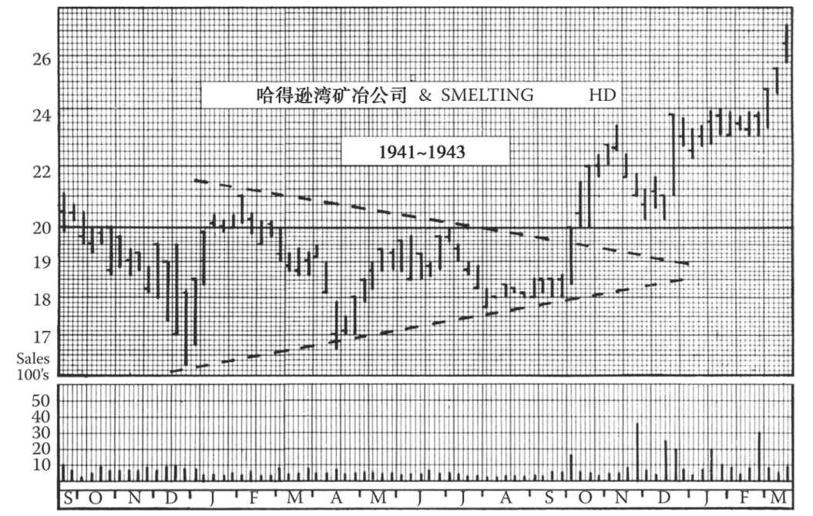
图8-1 这是周线图上出现的一个很好的三角反转形态。上界线从1942年2月反弹高点21美元开始向下倾斜，下界线则从“珍珠港事件”低点的16⅜美元向上倾斜，两线相交于18⅝美元的顶点。从这个长线底部形态开始，哈得逊湾矿冶公司一直上涨至1946年的45美元。请注意成交量随着三角形的形成而萎缩，并在1942年10月向上突破后放大。该突破发生在从第一个高点到顶点的3/4处
在对称三角形收紧的过程中，股价波动收窄，成交量也不断萎缩。成交量萎缩的过程并不规律，但随着时间推移，这个趋势会越来越明显。对称三角形的上界线和下界线会在图表右边（即未来的某一时刻）相交，构成三角形的顶点。越接近顶点，股价的波动区间就越窄，每日成交量也萎缩至地量。如果我们面对的是一个典型的对称三角形，那么接下来就进入了突破阶段。鉴于这个阶段的股价走势，对称三角形有时也被称为“弹簧”。就像一根弹簧越绷越紧然后突然被松开一样，股价毫无预兆地跳出了三角形区域，并伴有明显放量，然后，股价强势上涨或显著下跌，涨跌幅接近三角形态出现前的那波涨势或跌势。
至于趋势是向上还是向下，在突破实际发生之前图表不会给出任何预兆。有时，你可以分析同一时期其他个股的走势图来推测可能出现的情况（后文将详细讨论）。但更多时候，我们只能静观其变。三角形态展现的其实就是市场的“决策过程”。在经历了疑惑、踌躇和等待的过程后，市场最终做出决定。
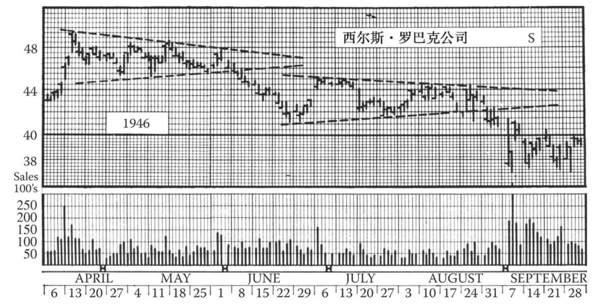
图8-2 西尔斯·罗巴克公司在1946年的牛市顶部走出了对称三角形反转形态。随后该公司股价再一次走出了三角形态，但此次为整固而非反转形态。此图两次给出卖出信号，一次是股价为44½美元时，另一次是股价为41美元时。之后，股价继续下跌至30½美元
8.2 值得注意的几点
清晰而紧凑的三角形态非常有趣，但它也有几个难以捉摸的特点。技术分析的初学者经常以为自己成功辨识了一个三角形态，但其实不然。请记住，两点连成一线。要画出三角形的上界线，就首先要确认2个短线高点，也就是说股价必须先涨至这2个高点再明显回落，让这2个顶部能够清晰地凸显出来。同样，要画出下界线，也需要先确认2个短线低点。也就是说，我们必须先确认4个短线的反转点，才能得出对称三角形正在形成的结论。如果该形态出现在股价上涨之后，那么我们必须先辨识1个高点，然后1个低点，紧接着第2个高点（低于第1个），最后第2个低点（高于第1个），而且确定第2个低点的前提是股价已再次被拉高。只有满足了上述所有条件，我们才能画出两条界线，认为对称三角形已经出现。
另外需要注意的一点是，股价停留在三角形区域的时间越久，该形态的效力就越小（这恰恰与弹簧的原理相反）。该形态并不会一直积攒力量，而是在某一个阶段后就丧失了效力。股价在起点至顶点的一半到3/4处突破的效力最大。如果股价在超过这段距离的3/4处后还未突破，并继续在越来越窄的区间内盘整，那么盘整的态势很有可能持续至顶点，并在达到顶点后仍小幅波动，让图表分析师们摸不着头脑。倘若出现这种情况，那么最好就此放弃，另觅他图。
第三个需要小心的地方是在三角形态完成之前（即股价跳出并远离该区域之前），我们有时需要修改上界线和下界线。如果沿着2个短线高点画出一条下倾的上界线后，自下界线开始的第3波上涨突破了这条上界线，但止步于之前一个（第2个）高点，且没有形成突破所需的成交量，那么我们需要重画上界线。当股价再次回落至三角区域内时，我们就应该连接第1个和第3个高点，画出一条新的上界线。
8.3 对称三角形的突破
股价突破三角形态后，既可能往上，也可能往下，基本上无法预判。前文关于头肩形的规则大致也适用于三角形。例如，股票收盘价突破界线至少约3%才算有效。同样重要的是，向上突破需伴随着成交量的显著放大；若成交清淡，则不能确认股价突破。但与头肩顶的情况类似，向下突破无须伴随着成交量的放大。记录表明，往往只有在股价跌破三角形内的最后一个短线低点（该低点可能低于实际突破点位）后，成交量才显著放大。
有意思的是，若对称三角形从一开始就伴随着较大的成交量，那么向下突破往往是假突破，股价到达三角形顶点后才突破的话尤其如此；股票放量跳空，所留下的缺口通常会发展成两三天的震仓走势，随后迅速反弹，进入真正的上行趋势。
以上内容无疑会使读者感到为难。对称三角形是一种明确的技术形态，但很难用于预判走势，因为对称三角形出现假突破的概率远大于头肩形，事实上远大于我们已经及将要讨论的任何其他形态。假突破可能令我们损失惨重，所以我们要通过良好的交易策略来控制风险。就连前一段所述的典型震仓走势也可能欺骗我们，演变成真正的下跌趋势。没有哪种技术形态百分之百可靠，而对称三角形是最不可靠的技术形态。
但我们的经验表明，约2/3的对称三角形并不出现假突破。处在对称三角形中的股票可能在不成熟的时候放量向上突破，之后股价落回三角形内，再酝酿一段时间后才开启真正的上涨趋势。本书后文将深入讨论假突破，因为交易者需要具备识别假突破的能力。
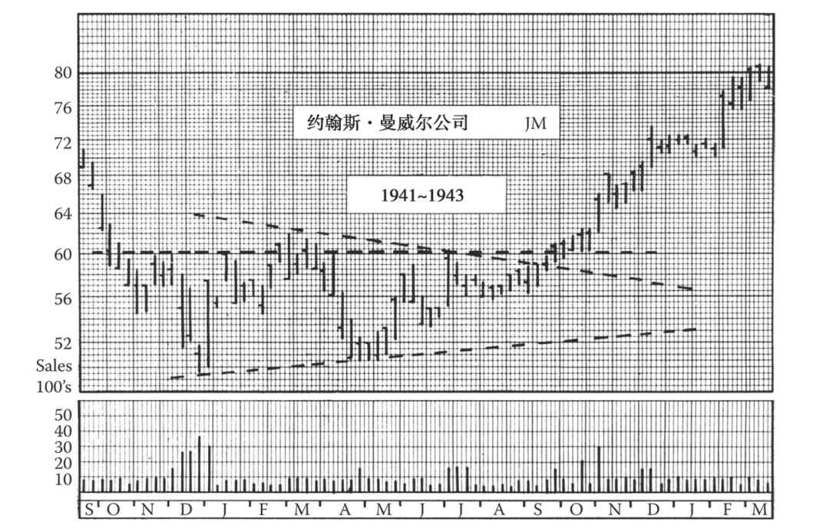
图8-3 约翰斯·曼威尔公司股票1942年走出了一个有点像头肩形的对称三角形，这是一个长线趋势反转形态。虽然这是周线图，但图中的成交量值得与股价走势结合起来研究。该股票在随后4年里飙升了100多美元
8.4 一段典型的三角形走势
本章插图中有若干对称三角形实例，可让读者了解三角形走势的不同面貌。但是，若对一个典型三角形态的发展过程加以详细描述，则可突出若干要点。让我们假设某股票从20美元左右涨到30、32、35美元，并仍在上涨，期间仅出现几次正常、短暂的休整与小幅调整。当股价在低位时，成交量在每天300～600股；而当股价在30美元以上时，该股票吸引了大量买盘，日成交量高达1000股左右。随着股价向40美元进军，日成交量放大至近2000股，市场在39和40美元之间出现反复，随后股价开始下跌，但你知道它不太可能直接跌回20美元（第9版编者按：不过在21世纪，股票有时会断崖式下跌）。如果该股票的趋势确实已经反转，那么它应该在高位盘旋一阵，呈现某种出货形态。
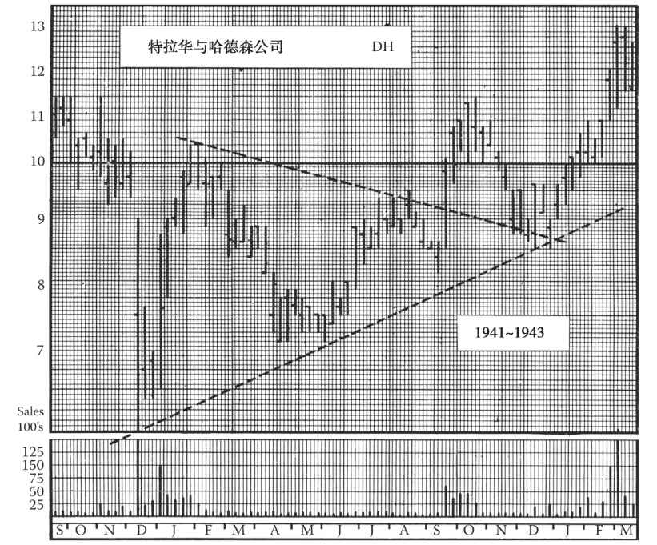
图8-4 用对数坐标周线图来呈现股价走势，可使低价位区域的技术形态更加显著。特拉华与哈德森公司股价在走出一个对称三角形底后转牛，后于1945年涨到57美元。请注意图上股价跌回至三角形顶点的那一段，这种现象很常见。三角形顶点本身是一个强支撑位（见第13章）
跌势持续10天，同时成交量明显缩小。股价跌回到33美元时，日成交量约700股。在33美元左右，日成交量可能有一天突然放大到800或900股，但股价调整结束，一两天后开始回升，换手率几乎不变。八九天后股价超过了35美元，日成交量放大，于股价升至39美元那天达到1200股。但股价随后并没有攻克40美元，而是展开新一轮调整，跌回到37美元。（如果你将这一过程在纸上画成图，就更容易观察。）现在，股价显然已在39美元形成了第2个高点；你可以在图上画出一条临时界线，它穿过两个高点，从左往右向下倾斜。目前图上只有一个低点，所以你还不能画出下界线。第2波跌势的成交量比第一波小，日成交量萎缩至400股；股价于34美元处结束调整，随后调头上行，但成交依旧清淡；当股价涨到36美元时，成交量开始放大。
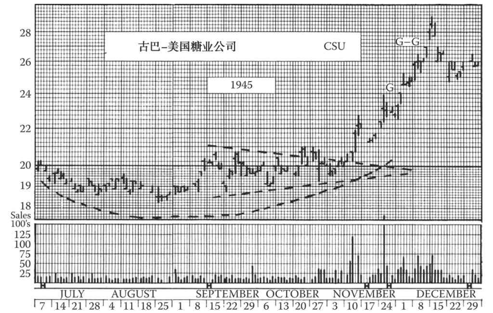
图8-5 三角形常是其他重要形态的一部分。这张图中，一个对称三角形构成一个圆底的后半部分。请注意10月17日的不成熟突破，股价随后回到三角形内，最终于11月8日成功突破
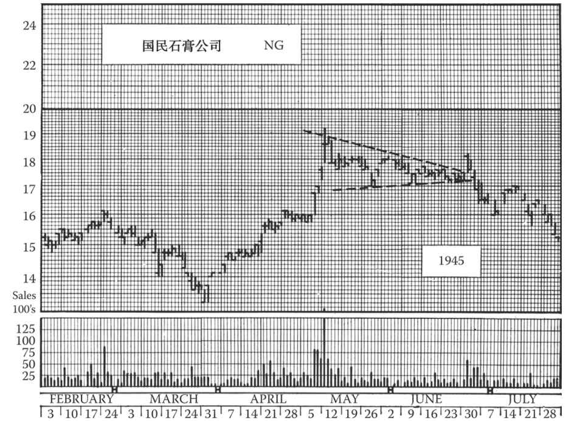
图8-6 这张图中，股价波幅逐渐收窄，到达对称三角形的顶点后上攻。此时的突破是不可靠的，图中显示的就是一次假突破，真正的趋势是向下
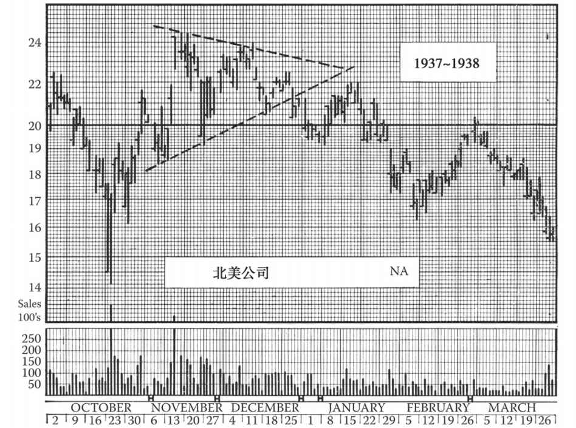
图8-7 股票从“恐慌底”反弹时，常受三角形走势压制，因为这段时期投资者普遍怀疑且犹豫。这样的心态往往导致新一轮下跌。“恐慌底”很少守得住。这张图上，1937年10月19日出现了巨量抛售，随后的反弹被一个典型对称三角形压制。请注意股价反抽至三角形顶点的那段走势
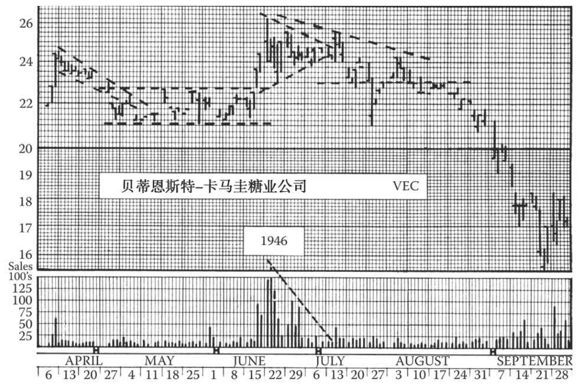
图8-8 这是一个长线对称三角形顶部形态，价格走到三角形上下界线的交叉处，然后发出一个向上突破的假信号（见图8-6）。贝蒂恩特斯-卡马圭糖业公司的这个突破值得怀疑
这样就形成了第2个短线低点，此时可以画一条底部切线，一条连接两次回调最低点的上倾线，第1点是33美元，第2点是34美元。这样，两条线相交，交汇点在36美元附近，也就是图表上约4周后（朝右）的位置。这是一个对称三角形，但是，我们并不知道在该形态之后股价将下跌还是会拨开疑云开始上攻。我们只能保持密切关注，并伺机而动。
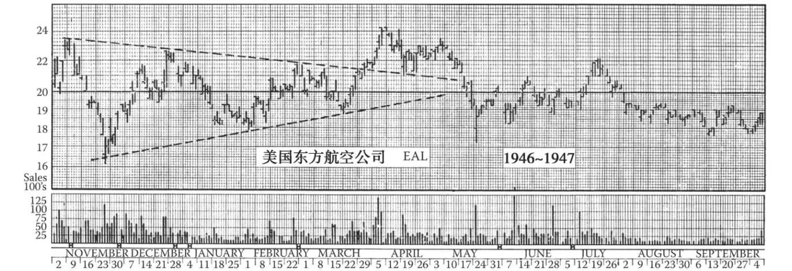
图8-9 这是一个明显失败的对称三角形态。警醒且有经验的技术分析师会发现3月和4月的情况有些不对。美国东方航空公司的股价于1946年年末至1947年年初形成了一段难以界定的走势。股价在3月底明确地向上突破，4月时回踩上界线的支撑位。然而后续的上涨短促而无力，然后向下突破，在三角形顶点附近放量下跌。这个过程中成交量大且无规律，特别是在2、3月份调整的时候，这些都是警示信号，说明这不是有效的三角形形态，在4月14日回踩后也未能迅速有力地推升股价
第2波反弹的换手很弱，每天只有700股左右的成交量，价格升至38美元，盘中一度到达38¾，略微超过前一个高点1/4美元（因为每一波行情的空间和时间都在缩小）。但这个短线穿透的成交量少于前一个高点（39美元），买盘也再次减少。随着股价回落至37美元和36美元之间，你应该画一条新的上切线，穿过第1个高点40美元和第2个高点38½美元。这个轻微的提升可能表明多方稍占上风，但这个结论靠不住。三角形一般不会那么精确，应允许一定偏差。
在第3波调整时，成交量降至最低水平。如果价格延续当前走势，则会达到下界线的35美元水平。值得注意的是，这次回调中价格是否会真的降至这个水平，因为如果轻微止步于这个水平之上，则会呼应前一波反弹时股价轻微超越上界线的现象。但这并没有发生；价格继续回调至35美元，且此时每日成交量仅有200股，低于之前股价在上涨初期（20美元以上）的水平。这是一个很重要的现象。价格短暂走平，然后缓慢而持续地上涨，超过36½美元。然后成交开始放大，达到（新的）上界线37½美元的水平。第2天，成交量剧烈放大至1500股，收于39⅛美元。这就是突破，疑虑消除（排除假突破的情况），股价再次回到上涨通道。请注意，股价不需要突破前期40美元的高点就能发出此信号，这也是对称三角形有趣的地方。
8.5 反转还是整固
我们开始时将对称三角形作为反转形态来讨论，但是，我们举的例子却是一个整固形态，也就是持续上升趋势中的一个休整阶段。其实，3/4的对称三角形都是整固形态，而剩余1/4才是反转形态。两者的区别在哪儿呢？
上文描述的这个例子在股价果断突破39美元前也有可能一个反转形态，而不是整固形态。如果是一个典型的反转形态，那么它与整固形态的第一个区别应该很快出现在（从第3个底部35美元开始的）最后一次上涨之后。那次上涨应该止步于36½美元，然后再度下探。然后，交投缓慢复苏，下界线被穿透。随着股价跌至34美元，日成交量可能会达到600～700股。此后的下探将构成下行信号，并带来成交量的进一步放大、价格加速下跌，因为股价低于34美元时会引发止损盘（后文将讨论）。
在结束这个经典案例之前，让我们再分析一下突破后的回踩或反抽。和头肩形一样，股价突破对称三角形后，可能不会立刻沿突破方向前进，而是会经历一波短线调整。通常这波调整会持续2～3天，并将股价拉回最近的那条边界线。因此，在第1个例子中，股价突破三角形态上界线后到达39⅛美元，第2天可能会继续推高至40美元，但之后会进入缩量回踩的过程。回踩可能会持续几天，直至股价跌至37½美元或38美元附近。之后，股价再次放量回升。如果三角形态被向下突破，那么股价有时也会先经历一波反抽，重回下边界线后再放量下跌。但是，与头肩形相比，三角形突破后出现调整的概率更小。
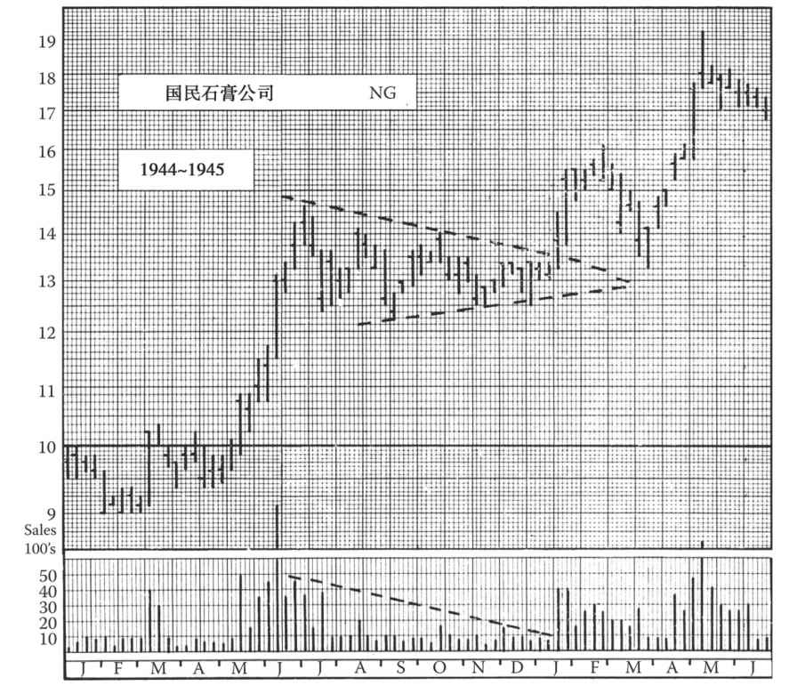
图8-10 此图为周线图。1944年国民石膏公司股票经历了长达7个月的整固，然后走出一个典型的对称三角形态。1945年1月该股放量突破三角形区域，紧接着回调至三角形的顶点附近，随后再次强势上涨。股价达到了三角形态的最小上涨目标16美元
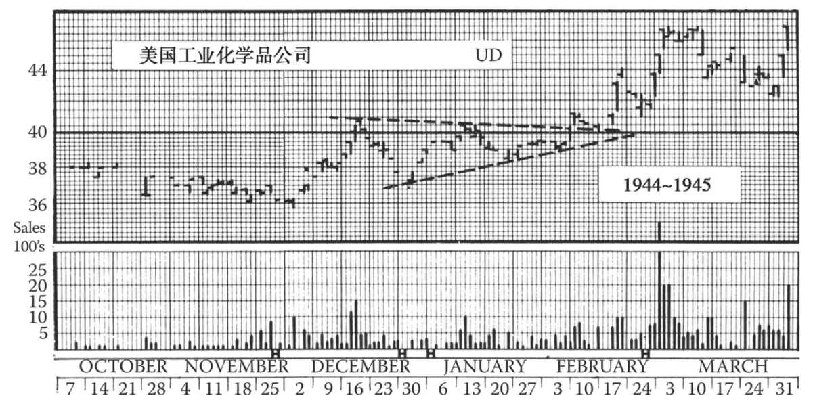
图8-11 图中有一个小对称三角形，呈现出上升三角形的特点。请注意在三角形区域中，股价1月初上涨，伴随成交量放大。此类表现多见于流通盘较小的股票
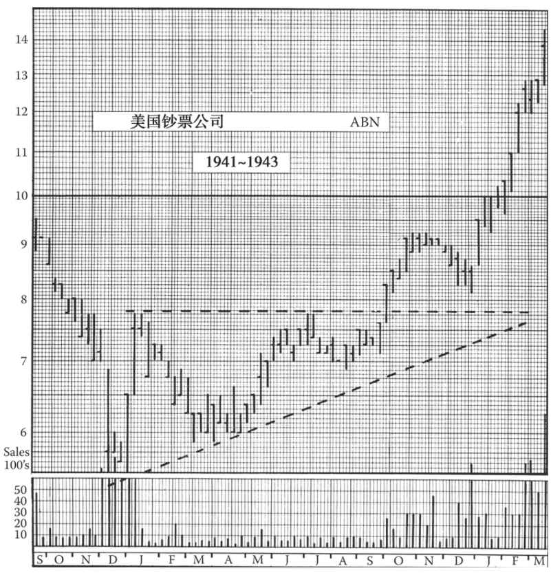
图8-12 美国钞票公司股票走出了一个长达10个月的上升三角形，开启长线牛市行情，此后一路涨至45美元。此图显示，1942年8月股价拒绝回调至下边界线。该表现常见于强势形态，预示着形态即将完成、突破即将到来
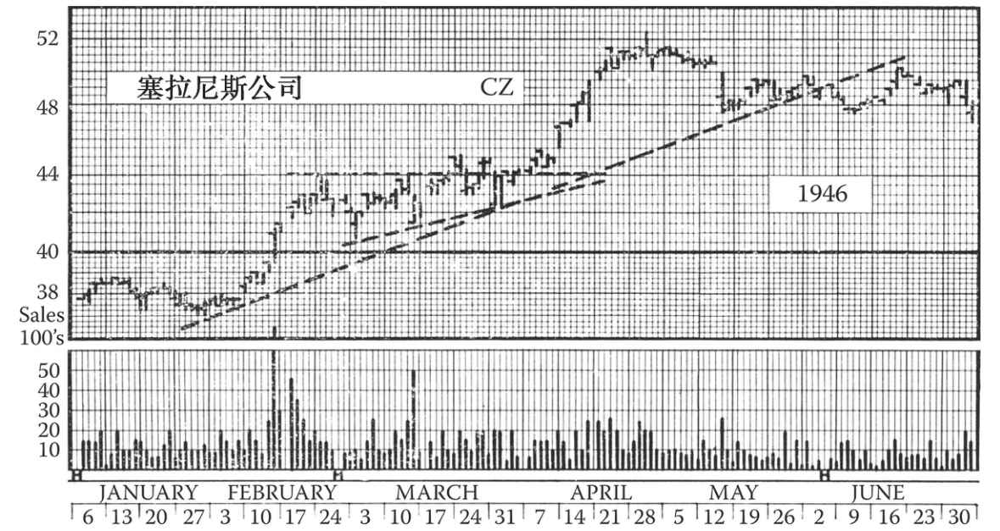
图8-13 塞拉尼斯公司的股价走出了一个直角三角形，1946年3月的不成熟突破会让追高该股的投资者短期内感到失望，但股价最终成功突破，开启涨势。在1946年分股之前，该股经历了不同寻常的频繁震仓，如图中3月9日和3月26日所示
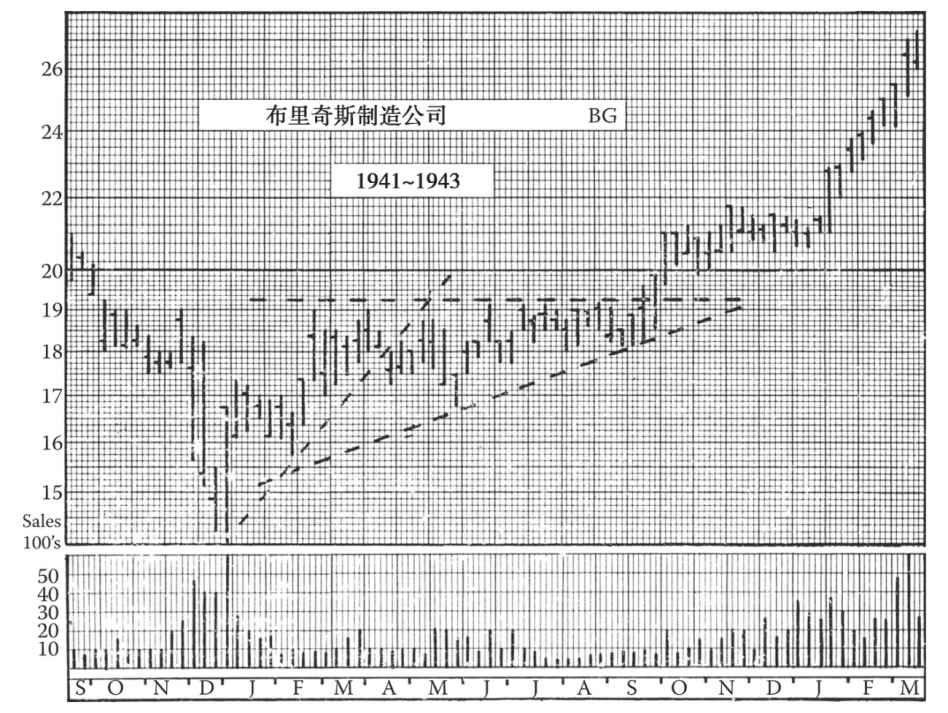
图8-14 自恐慌期底部（珍珠港事件时的抛售）开始的强势修复渐渐演变成了一个上升三角形。请注意位于19美元处的这条水平阻力线和逐渐上升的支撑线。1942年9月的突破开启了一波重要涨势。这波涨势最终演变为长线牛市，将布里奇斯制造公司的股价推高至53美元
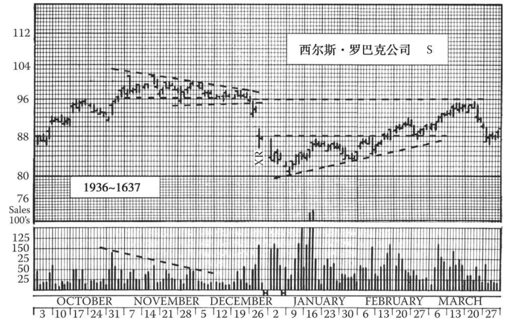
图8-15 西尔斯·罗巴克公司在1936年的牛市顶部走出了一个对称三角形，之后股价自顶部下跌了15美元。随后，一个上升三角形引出了一波中线修复行情，股价重回本图左上方对称三角形下界线的阻力区（见第13章）。请对比本图与图8-2所示的1946年顶部形态
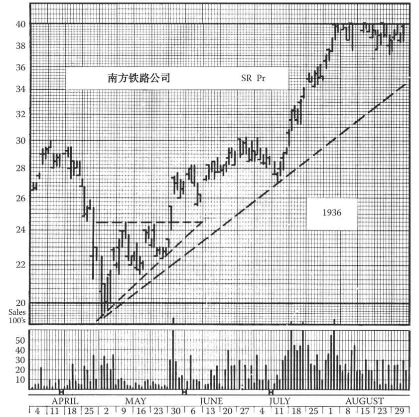
图8-16 此图展示了一个上升三角形，它形成于1936年4～8月，位于一个中线底部。随着该形态的形成，交易量极度萎缩，展现出重要的技术意义
接下来我们要讨论的是对称三角形的成因。思考对称三角形形成的原因有助于我们认识该形态的特征。当然这么做可能对该形态大而化之，分析结果也可能不适合该形态的所有变体，但这个推断的过程不仅有趣，还有利于我们理解技术形态的一般理论。让我们回到前面所讲的典型例子。假设某股票从20美元左右稳步上涨到40美元后回调。在40美元处，显然许多投资者已有近100%的可观浮盈。（40、50、75、100美元这样的“整数位”往往成为获利了结的心理目标位，当股价涨至这些目标位时，抛盘就会涌现。）一些投资者按既定计划抛售股票，卖盘盖过了买盘；当然随着股价的回落，抛盘不得不有所收敛。另有一些看多该股的投资者，未能在30美元以下入场，又不愿在40美元追高，该股的回调正是他们的入场机会，他们在33美元处进场扫货，买盘超过了卖盘。
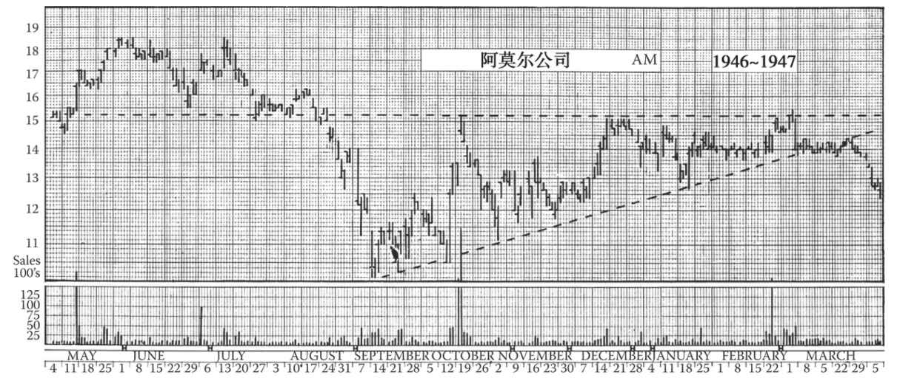
图8-17 这张图显示，1947年年初阿莫尔公司股价未能突破上升三角形的上界线，在15美元处卖盘最终盖过买盘。上升三角形往往预示着长线上涨趋势。此图所示“失败”走势的原因，可能是三角形（此图中10～15美元区间）内部出现了较长的箱体形态，也可能是前期低点附近出现了双底（此图中10美元附近）。然而该股票几次冲击15美元失败，之后调头向下，后来直到1955年才超越15美元
然而，那些未能在40美元处套现的投资者，此刻正虎视眈眈地看着该股上涨，决心在机会再次出现时及时出手。他们的抛盘在股价越过37美元后涌出，并导致这波涨势于39美元止步。我们可以想象此过程反复上演，越来越多的投资者急切地落袋为安，而新的资金源源不断地进场消化卖盘。最终卖盘被完全消化，投资者发现抛压骤然减轻，于是蜂拥扫货。
因为对称三角形成形后的涨幅（或跌幅）通常比较大（涨跌目标将在后文讨论），所以能预测股价突破方向的交易者显然占优势。如前文所说，三角形成形之后的股价趋势可能延续之前的方向，这种情况特别常见于长线牛市或熊市的早期；而随着长线趋势的延续，反转的概率越来越大。但是，其他股票的图形常是有用的辅助依据。因此，当某股票正在构筑对称三角形时，如果其他许多股票正在构筑碟形底、头肩底、上升三角形或其他某种典型的底部反转形态，你就可以判断该股票的对称三角形将向上突破，此时入场常可获利。
8.6 直角三角形
直角三角形走势分为上升三角形和下降三角形两类，分别预示着上涨与下跌。在许多方面，直角三角形很像对称三角形，但两者有一个重要区别：直角三角形对其突破方向有很强的预示效力。上升三角形预示着股价将向上突破，下降三角形预示着股价将向下突破，这两种图形正因此得名。
如我们所见，对称三角形由一系列逐渐收窄的价格波动组成，连接这些波动高点的直线就是下倾的上界线，连接其低点的直线就是上倾的下界线。直角三角形的显著特点是：两条界线中有一条是水平的，另一条向它倾斜。如果上界线是水平的，且下界线向上倾斜并与上界线相交于三角形的顶点，那么此时的形态就是上升三角形；如果下界线是水平的，且上界线向下倾斜并与下界线相交于三角形的顶点，那么此时的形态就是下降三角形。
直角三角形合乎逻辑，很容易解释。比如，上升三角形以最简单、最普通的形式，记录了日益增长的买盘在某一固定价位遭遇大量卖盘的过程。如果买盘源源不断，那么在该价位出货的卖盘最终将被完全消化，随后股价就会快速上扬。一个典型上升三角形开始形成时很像上文所述“理想”的对称三角形，在我们的例子中，股价从20美元涨到40美元，在40美元处突然涌现大量卖盘，导致股价向下调整。一些投资者可能跟风抛售、落袋为安，但随着股价回落至34美元，卖盘很快被消化，然后新的买盘涌现，推动新一波上涨。股价重回40美元后又遭遇卖盘，股价再度回落，但这次只跌到36美元就被买盘托起。可是，在40美元出货的主力尚未出清全部股票，所以可能需要经历另一次调整和另一波上攻，卖盘才会衰竭，涨势才能展开。
8.7 有计划的出货
上升三角形走势表明，某些持有大量股票的投资者会在预定价位有计划地出货。与对称三角形相比，直角三角形的确定性更高。只要买盘持续涌现，出货方就相信自己能以40美元出清股票，无须降价出货。同样明显的是，只要买盘不断追高，那么一旦40美元处的卖盘被完全消化，那么股价就将快速、轻易地上扬。一旦股价突破40美元，在40美元处买入该股票的投资者会感觉自己的判断得到了验证，因此只有在获利丰厚的情况下才会抛售。
前面这两句话包含了直角三角形的要点。随着股价的上涨，买盘必须持续涌现，否则上升三角形就难以为继。上界线的卖盘必须最终被完全消化，否则股价无法向上突破。如果买盘在股价越过阻力线（水平上界线）之前就开始萎缩，那么随后的调整可能使股价跌到三角形的下界线以下，此时技术分析师就需要修正自己的看法。你也许以为这种突破下界线的走势很常见，但经验显示它们罕见得令人意外。我们说“令人意外”，是因为在上升三角形中，出货主力显然一定相信，股票有理由涨到他们出货的价位。作为持有大量股票、能影响市场达数周乃至数月的主力，他们的判断不容忽视。但是，一旦下界线或支撑线显示出明确的上倾迹象，新涌入的买家十之八九能大赚一笔。
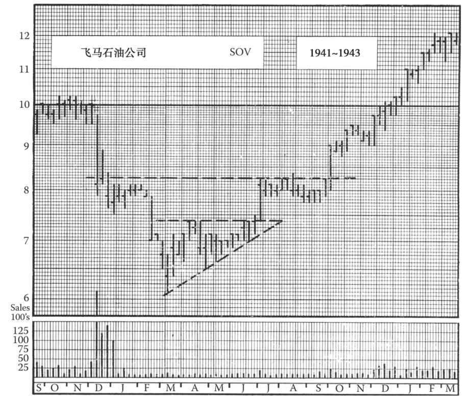
图8-18 1942年熊市底部时，飞马石油公司股价呈现出一个特别的头肩形态，其头部由一个上升三角形构成。股价7月向上突破三角形、10月向上突破头肩底颈线时，都伴随着成交量的放大
有时候，上升三角形的第3次或第4次调整会向下突破前期确立的上倾支撑线（下界线），但会止步于前期调整的低点。此后股价更容易走出一个箱形（下一章将讲到），也应该被视作箱形来处理。（本书第二部分将讲到上升三角形、下降三角形及此类形态出现在崩盘时的操盘策略。）
8.8 下降三角形
下降三角形有一条水平的下界线（或称支撑线）和一条下倾的上界线（或称阻力线）。很明显，其形成的市场环境与上升三角形态的市场环境相反。两种形态的效力都很强，失败的概率都较小。下降三角形态的形成常常缘于一群投资者或某个财团（常常是投资信托）（第9版编者按：公募基金或收购集团）以一个低于市价的水平大量收购某只股票。该买单下达之后，会一直持续到以该价格全部成交为止。如果由此引发的涨势被新的卖盘以更低的价格消化（因此形成下降三角形态），那么上文所述的买单最后会全部成交，之后价格下跌。而下界线（被很多投资者视为可以延续一段时间的重要支撑位）的突破则会打击前期没有卖出股票的投资者的信心，引发更多抛盘，加速股价下跌。
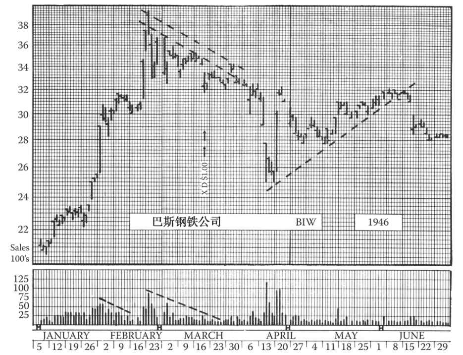
图8-19 巴斯钢铁公司股价于3月14日除息1美元，这个下降三角形态的下界线被重画，从原来的33美元向下移至32美元。尽管重画界线为三角形态留出了更大的空间，但股价仍迅速跌至了该形态预示的最小下跌目标。此后股价分别于4月4日、4月16日和5月31日下探，形成新的下界线。该情况比较罕见，但如果看一下这个阶段的大盘走势，就不难解释。如果股票在某一任意形态的形成过程当中除息，那么该形态的边界线应该立即根据新的低点进行调整，以反映该次除息
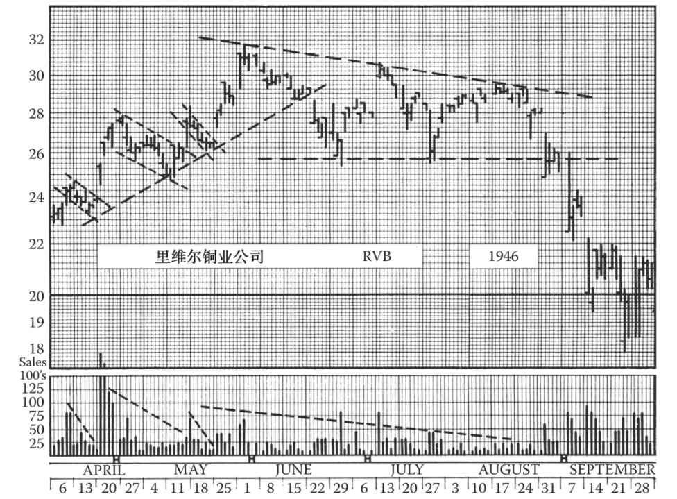
图8-20 如果根据基本面，1946年时里维尔铜业公司应是一个很好的持有品种，这可能也解释了为什么这一年6月时该股并不跟随大市一起下调。从5月中开始至8月，该股形成了一个较大的下降三角形态，但是熊市信号其实已经出现在6月底及7月23日。最终突破（伴有明显跳空缺口）出现在8月27日。股价在该界线上下震荡了4天，然后暴跌。4月和5月出现的小形态是旗形，第11章将讨论
8.9 直角三角形的成交量特点与对称三角形相同
伴随直角三角形的成交量变化非常清晰，与对称三角形的成交量变化几乎完全一样。随着股价接近三角形顶点，成交量萎缩。在上升三角形中，每一波上涨都伴随着成交量的放大，每一波下跌都伴随着成交量的缩小；在下降三角形中，成交量则是在股价上涨时缩小，下跌时放大，当然有时成交量的变化不那么明显。在形态突破前，成交量整体呈萎缩趋势。
直角三角形突破后的情形也几乎与对称三角形一样。向上突破（上升三角形）通常伴随着成交量的显著扩大。如果没有成交量的配合，突破就应该打上一个问号。向下突破（下降三角形）时成交量变化并不明显，但突破后的2～3天后交投就会活跃起来。突破后的回踩和反抽也很常见，具体取决于市场环境。所以，如果某股票向下突破一个下降三角形，而当时大市稳固，则股价很可能在继续下跌前经历一波反抽。
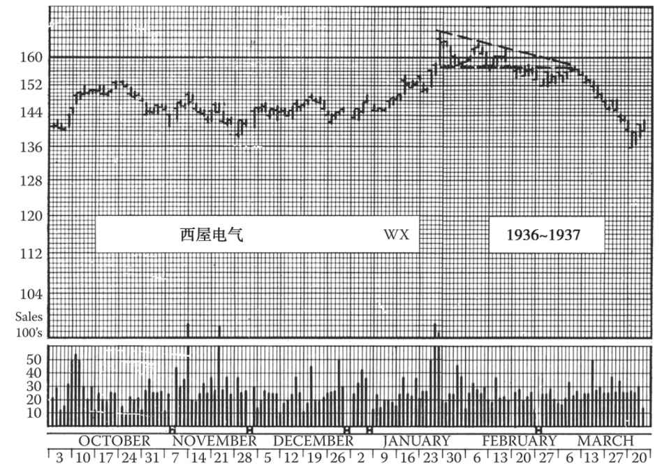
图8-21 西屋电气在1937年的牛市顶部走出了一个下降三角形，该形态自1月开始发展，2月15日向下突破，之后股价先在下界线附近徘徊了4天，接着小幅下跌，后于3月4日再次反抽回下界线，此时大盘见顶
本章的几幅图表都表明了非常重要的一点：如果在长时间上涨后，大多数个股走出了预示熊市的反转形态，股价向下突破形态后仅反抽至下界线或阻力位，而此时平均价格指数正在创新高，那么市场就往往处在危险的边缘，一轮大熊市即将到来。但是，当中线趋势反转时，我们很少见到个股和平均价格指数之间的此类分歧。如果一些重要个股，如西屋电气、杜邦公司、通用汽车等，无法“印证”平均价格指数的新高，那么就尤其应该警惕。
请观察图6-4、图6-7、图6-10和图8-15，比较这些个股和平均价格指数的同期走势。此图上1936年10月至次年1月的碟形调整形态发展成了复杂头肩形整固形态，我们将在第11章讨论这种形态。
西屋电气的股价于1937年4月跌至130美元，在该价位走出一个箱体形态，8月反弹至158美元，之后再次下探，11月跌至88美元。请比较本图（日线图）与图15-15（西屋电气1935～1938年月线图）
可靠的突破往往发生在直角三角形的一半至3/4处，与对称三角形一样。突破出现得越早，假突破的可能性就越低（虽然与对称三角形相比，直角三角形出现假突破的概率更小）。在少数情况下，股价振幅越来越窄，达到顶点后仍然没有出现确定的突破。在这种情况下，三角形态的大部分效力已消失殆尽。
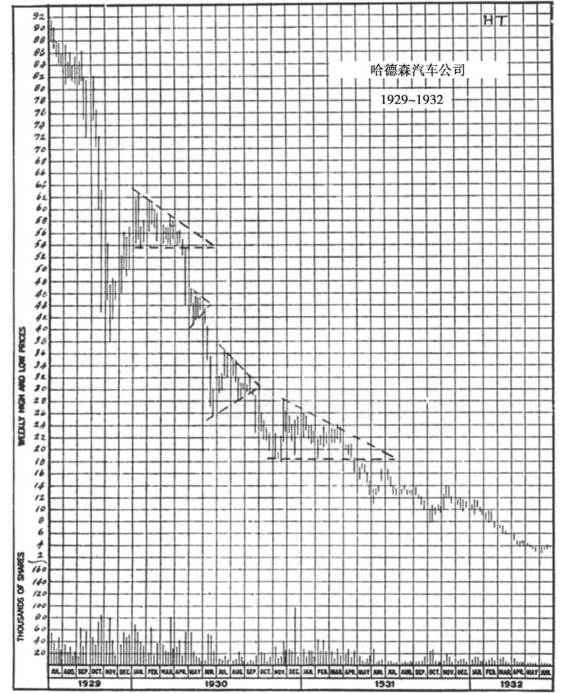
图8-22 哈德森汽车公司在1929～1932年的熊市中走出了一系列的对称三角形和下降三角形。请注意在这波跌势中，未出现任何可称为长线底部的形态。同时，股价每次突破三角形后，都迅速跌至最小下跌目标位。我们在实战中，既要紧盯日线图，也要留意周线图和月线图，以免只见树木，不见森林
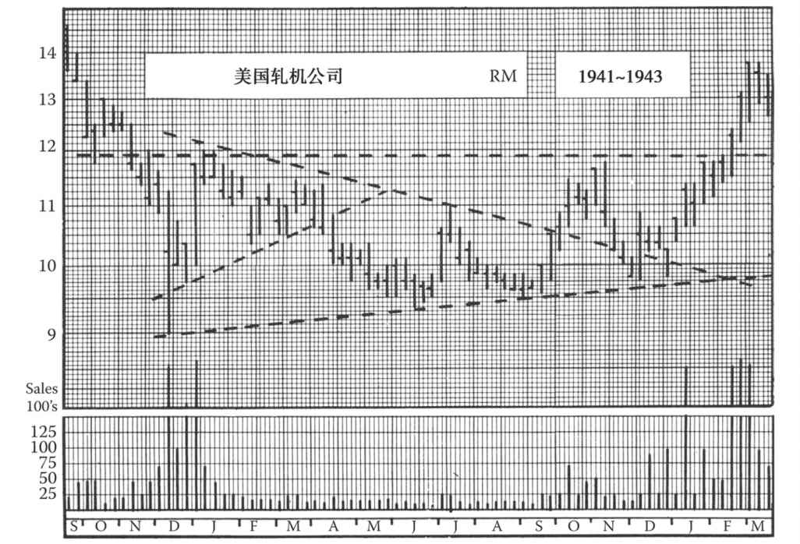
图8-23 美国轧机公司股票在1941～1943年构筑了一个长线底部，其早期阶段的形态不甚明朗。1941年珍珠港事件引发恐慌性暴跌，之后股价回升，走出了一个大对称三角形，1942年4月向下突破后跌到了最小下跌目标位，但未跌破1941年12月低点。6月的反弹和8～9月的调整使得图上出现了另一个大对称三角形，股价于9月向上突破该三角形。然后该股于1942年12月跌回到第2个三角形的顶点，接着走出一个长达15个月的上升三角形，完成了长线底部的构筑，最终在1946年上涨到42美元。1942年6月和8～9月的调整都伴随着低成交量，而1942年10月和1943年1～2月的上涨都伴随着成交量的放大，都是明白无误的长线牛市信号。请记住，筑底需要时间
8.10 测算三角形突破后的最小涨跌目标
我们在第6章中给出了头肩形的最小涨跌目标测算规则，而对于对称及直角三角形，我们也有类似的规则。最小涨跌目标测算公式的推导过程比较复杂，但读者只需看看该公式在本章若干实例中的应用，就能快速了解。假设我们面对着一波上涨行情（股价向上突破三角形），从第1波反弹的高点（即三角形的左上角）出发，画一条平行于三角形下界线、从左往右向上倾斜的直线。股价的最小上涨目标就是攀升到这条线。此外，股价在突破三角形后，往往会以进入三角形前的角度或速度上涨。据此，我们能测算出股价到达最小涨跌目标的大致时间及价位。同样的规则适用于下降三角形（当然，要从左下角出发画直线）。
虽然上述公式能让我们测算股价突破三角形后的最小涨跌目标，但它与头肩形的测算公式比起来，既不精确也不可靠。别忘了，如果股价在到达三角形顶点附近后才突破，那么该形态的效力将大打折扣。
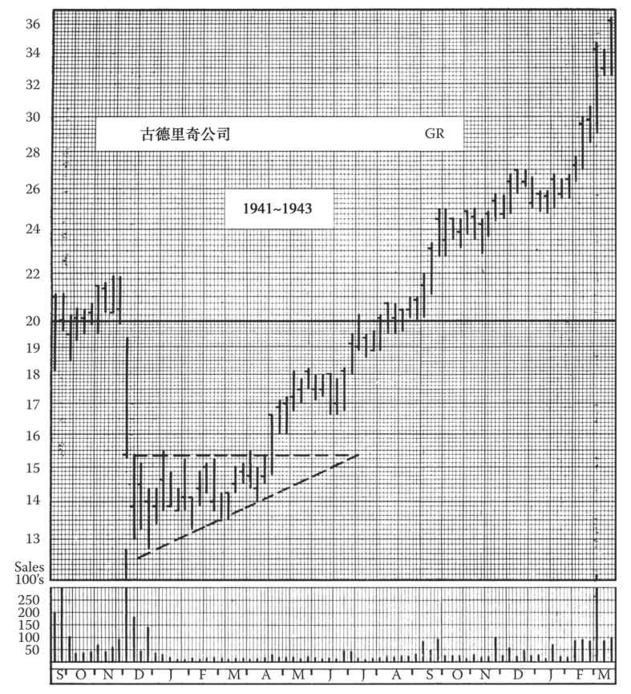
图8-24 1942年，古德里奇公司走出了一个完美、紧凑的上升三角形，实现了由熊到牛的长线反转。股价于4月向上突破三角形，而从这张周线图上看不出成交量的放大（但请记住，周线图常难以反映成交量的重大变化）。股价突破该三角形后的第1波上涨就到达了测算公式预示的最小上涨目标位，即在5月末涨到18美元。该股在18～21美元遭遇大量卖盘（在第13章学习支撑位与阻力位时请重温此图），但于9月放量突破该区间，发出长线上涨信号
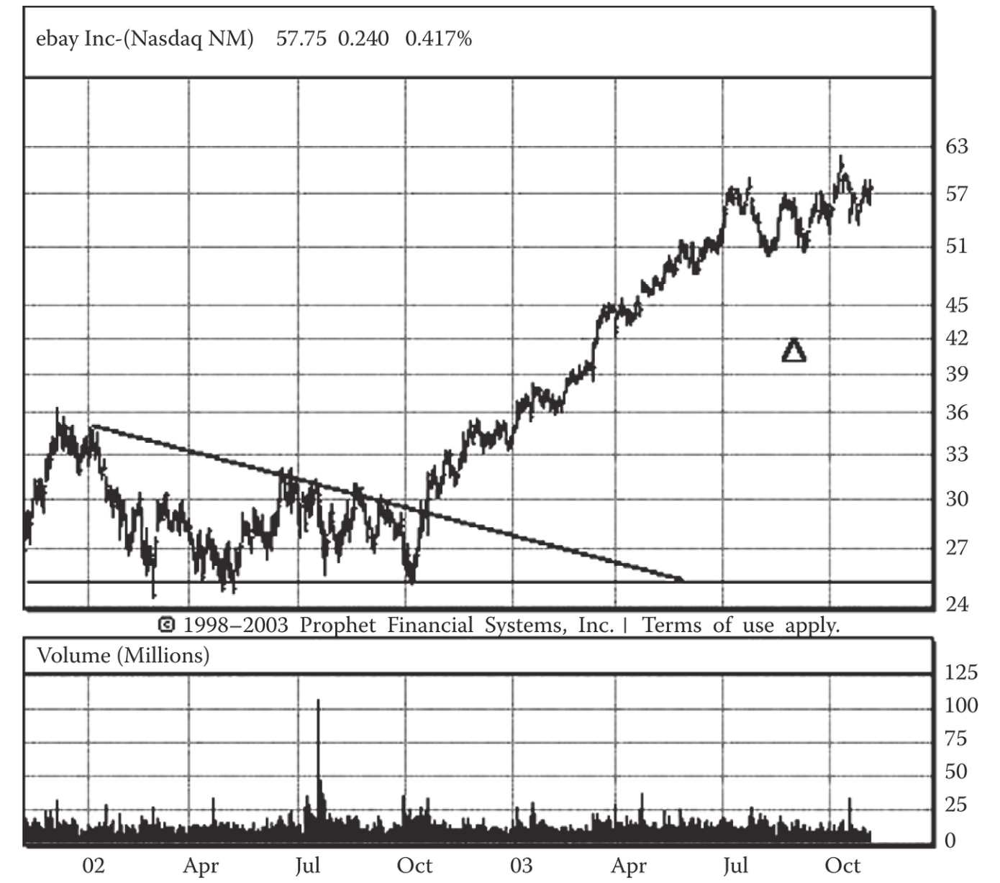
图8-25 这是一张来自prophet.net的实时走势图。eBay股票的成交量在2002年7月急剧放大，引起投资者关注，图上的下倾直线就是那时画的。当时该股的走势有点像下降三角形。但当该股于2003年10月放量突破形态后，上涨趋势明朗起来。eBay股票有实际价值，因为该公司真金白银地赚钱，而不像其他互联网公司那样只会吸引眼球。eBay实打实地向许多人提供有经济价值的服务，而不是上演烧钱的闹剧。第10章中的图10-26展现了该股在更长时期内的走势。这个例子给我们的启示：要重视趋势线的效力；要重视成交量的异动；莫盲信任何预测。如果将这张图中截至2002年10月的形态视为下降三角形，那么对股价趋势的预测必定是向下
8.11 周线图和月线图上的三角形
我们前面讲过，头肩形可能出现在周线图或月线图上，其技术意义与其大小成正比。三角形也可能出现在周线图或月线图上。周线图上的三角形往往有明确、可靠的效力，而月线图上那些“粗糙”的三角形（特别是大而松散、跨越几年的三角形）基本上没有技术意义。
8.12 其他三角形形态
还有一些整固或震荡形态，有两条收敛于一点的上下界线，故也可归类为三角形。但它们与本章所述的真正三角形之间存在一个或多个重要差异，因此最好放在其他章节来讨论。这些形态是旗形、三角旗形、楔形。另外还有一组形态，因有两条发散的上下界线，故有时被称为“倒三角形”。但是，它们的成因、特征和预测效力迥异于三角形，所以我们称其为“扩散形态”，后文将详细介绍。
读者可能已对本书中常出现的“通常”“一般”等限定词感到厌烦。但是，要想反映现实，就必须使用这些词。世上不会有两个一模一样的图表形态，也不会有两段一模一样的市场走势。在股市中，历史的确会重演，但不会以一模一样的形式上演。然而，熟悉历史形态、了解通常走势、不轻信“这次不一样”的投资者，将跑赢那些藐视规则、寻觅特例的人。
初学者往往很幸运，他会在图上一个接一个地发现三角形、头肩形或其他重要形态，看着它们按既定规则发展、为自己提供赚钱机会。但他不久就会遇到各种特例，或因过于关注短线形态而忽视中长线趋势，以至于被套。所以，我们不断地强调各种特例。市场走势的技术分析永远都不会是一门精密科学，这也是我们使用一系列限定词的原因。